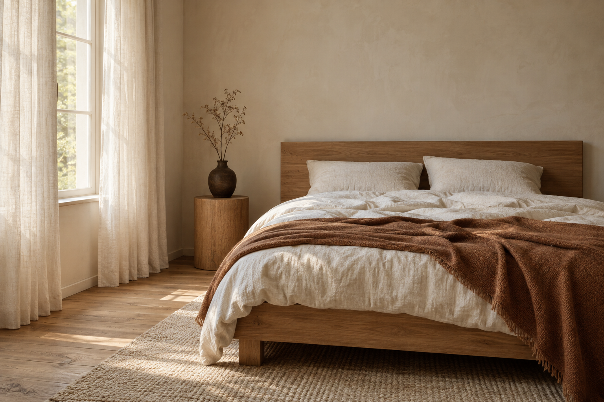
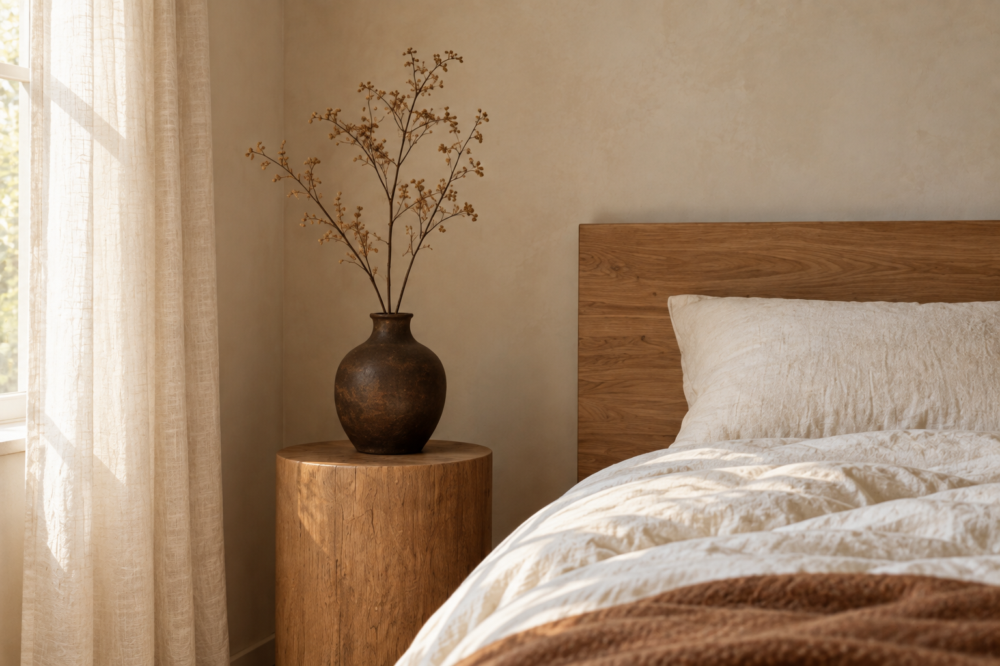

Światło.
Drewno. Len.
Dwa ujęcia jednej koncepcji sypialni: plan ogólny oraz detal. Ciepły dąb, naturalne tkaniny i miękkie światło dzienne.
Autorskie próbki demonstracyjne — przygotowane do oceny stylu i jakości, bez wykorzystania materiałów klienta.

Naturalna paleta, spokojna kompozycja, widoczne sploty i zagniecenia tkanin.
Pobierz PNG · 1536 × 1024

Ten sam kierunek materiałów, światła i kolorystyki w bliższym ujęciu.
Pobierz PNG · 1536 × 1024
Od kierunku wizualnego do gotowego zestawu
Najpierw ustalamy referencje, zastosowanie oraz formaty. Po akceptacji pierwszego kadru powstają pozostałe ujęcia. Każdy obraz sprawdzam pod kątem geometrii, detali i spójności z zestawem.